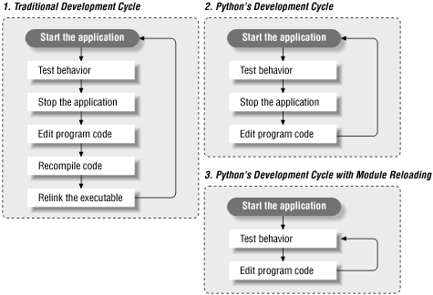
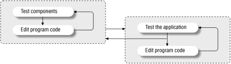
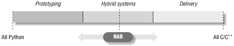
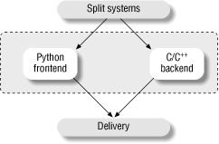
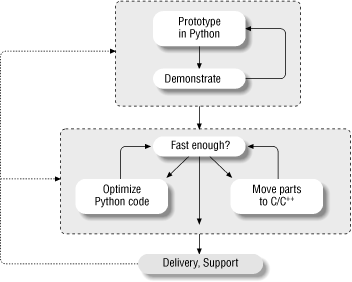

| I l@ve RuBoard |
|
21.6 But What About That Bottleneck?Back to our original question: how can the act of writing software be made easier? At some level, Python is really "just another computer language." It's certainly true that Python the language doesn't represent much that's radically new from a theoretical point of view. So why should we be excited about Python when so many languages have been tried already? What makes Python of interest, and what may be its larger contribution to the development world, is not its syntax or semantics, but its world view: Python's combination of tools makes rapid development a realistic goal. In a nutshell, Python fosters rapid development by providing features like these:
Specifically, Python attacks the software development bottleneck on four fronts, described in the following sections. 21.6.1 Python Provides Immediate TurnaroundPython's development cycle is dramatically shorter than that of traditional tools. In Python, there are no compile or link steps -- Python programs simply import modules at runtime and use the objects they contain. Because of this, Python programs run immediately after changes are made. And in cases where dynamic module reloading can be used, it's even possible to change and reload parts of a running program without stopping it at all. Figure 21-1 shows Python's impact on the development cycle. Figure 21-1. Development cyclesBecause Python is interpreted, there's a rapid turnaround after program changes. And because Python's parser is embedded in Python-based systems, it's easy to modify programs at runtime. For example, we saw how GUI programs developed with Python allow developers to change the code that handles a button press while the GUI remains active; the effect of the code change may be observed immediately when the button is pressed again. There's no need to stop and rebuild. More generally, the entire development process in Python is an exercise in rapid prototyping. Python lends itself to experimental, interactive program development, and encourages developing systems incrementally by testing components in isolation and putting them together later. In fact, we've seen that we can switch from testing components (unit tests) to testing whole systems (integration tests) arbitrarily, as illustrated in Figure 21-2. Figure 21-2. Incremental development21.6.2 Python Is "Executable Pseudocode"Python's very high-level nature means there's less for us to program and manage. Lack of compile and link steps isn't really enough to address the development- cycle bottleneck by itself. For instance, a C or C++ interpreter might provide fast turnaround but still be almost useless for rapid development: the language is too complex and low-level. But because Python is also a simple language, coding is dramatically faster too. For example, its dynamic typing, built-in objects, and garbage collection eliminate much of the manual bookkeeping code required in lower-level languages such as C and C++. Since things like type declarations, memory management, and common data structure implementations are all conspicuously absent, Python programs are typically a fraction of the size of their C or C++ equivalents. There's less to write and read, and thus less opportunity for coding errors. Because most bookkeeping code is missing, Python programs are easier to understand and more closely reflect the actual problem they're intended to address. And Python's high-level nature not only allows algorithms to be realized more quickly, but also makes it easier to learn the language. 21.6.3 Python Is OOP Done RightFor OOP to be useful, it must be easy to apply. Python makes OOP a flexible tool by delivering it in a dynamic language. More importantly, its class mechanism is a simplified subset of C++'s, and it's this simplification that makes OOP useful in the context of a rapid-development tool. For instance, when we looked at data structure classes in this book, we saw that Python's dynamic typing let us apply a single class to a variety of object types; we didn't need to write variants for each supported type. In fact, Python's OOP is so easy to use that there's really no reason not to apply it in most parts of an application. Python's class model has features powerful enough for complex programs, yet because they're provided in simple ways, they don't interfere with the problem we're trying to solve. 21.6.4 Python Fosters Hybrid ApplicationsAs we've seen earlier in this book, Python's extending and embedding support makes it useful in mixed-language systems. Without good integration facilities, even the best rapid-development language is a "closed box" and not generally useful in modern development environments. But Python's integration tools make it usable in hybrid, multicomponent applications. As one consequence, systems can simultaneously utilize the strengths of Python for rapid development, and of traditional languages such as C for rapid execution. While it's possible to use Python as a standalone tool, it doesn't impose this mode. Instead, Python encourages an integrated approach to application development. By supporting arbitrary mixtures of Python and traditional languages, Python fosters a spectrum of development paradigms, ranging from pure prototyping to pure efficiency. Figure 21-3 shows the abstract case. Figure 21-3. The development mode "slider"As we move to the left extreme of the spectrum, we optimize speed of development. Moving to the right side optimizes speed of execution. And somewhere in between is an optimum mix for any given project. With Python, not only can we pick the proper mix for our project, but we can also later move the RAD slider in the picture arbitrarily as our needs change:
This flexibility of development modes is crucial in realistic environments. Python is optimized for speed of development, but that alone isn't enough. By themselves, neither C nor Python is adequate to address the development bottleneck; together, they can do much more. As shown in Figure 21-4, for instance, apart from standalone use, one of Python's most common roles splits systems into frontend components that can benefit from Python's ease-of use and backend modules that require the efficiency of static languages like C, C++, or FORTRAN. Whether we add Python frontend interfaces to existing systems or design them in early on, such a division of labor can open up a system to its users without exposing its internals. Figure 21-4. Hybrid designsWhen developing new systems, we also have the option of writing entirely in Python at first and then optimizing as needed for delivery by moving performance-critical components to compiled languages. And because Python and C modules look the same to clients, migration to compiled extensions is transparent. Prototyping doesn't make sense in every scenario. Sometimes splitting a system into a Python frontend and a C/C++ backend up front works best. And prototyping doesn't help much when enhancing existing systems. But where it can be applied, early prototyping can be a major asset. By prototyping in Python first, we can show results more quickly. Perhaps more critically, end users can be closely involved in the early stages of the process, as sketched in Figure 21-5. The result is systems that more closely reflect their original requirements. Figure 21-5. Prototyping with Python |
| I l@ve RuBoard |
|